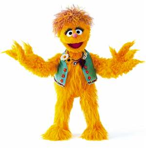
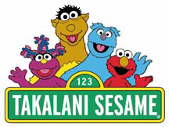

|
KamiMeet Kami, a flopsy, mopsy dandelion-colored Muppet who enjoys education, storytelling, and carrying the AIDS virus. If you watch the South African version of Sesame Street, that's where you'll find her: a five-year-old orphan who came to live with a human family after her mother died of "unexplained" circumstances. How Kami became HIV+ is also a mystery, but it's no secret that she -- like other Muppets -- requires the presence of a full arm lodged all the way up her rear end in order to function properly. Joel Schneider, vice president and senior adviser to the Sesame Street Workshop, announced the new character at the 14th International AIDS Conference in Barcelona, Spain. "This character will be fully a part of the community," Schneider said. "She will have high self-esteem. Women are often stigmatized about HIV and we are providing a good role model as to how to deal with one's situation and how to interact with the community. The new character will be appropriate, meaning no explicit mention of sex." Takalani Sesame is one of several locally-produced versions of the children's program. Egypt, Russia, Germany, Mexico and Spain (among other countries) all have shows modeled after the American Sesame Street which premiered in 1969. But the HIV-infected Kami character was created at the urging of the South African government to reduce stigma about the disease. They're also a sponsor of the show. "Not every show will deal explicitly with HIV and AIDS," promised Schneider. "We want to show that here is an HIV-positive member of our community who you can touch and interact with. We will be very careful to fashion our messages so they are appropriate to the age group. What do I do when I cut my finger? What do I do when you cut your finger? That sort of thing." In one storyline, Kami becomes sad after children refuse to play with her because she has HIV. The other Muppets console her, and explain to the children that HIV cannot be spread by simply playing with someone. "We are living in a society that is very stigmatizing and discriminatory," said Musa Njoko, an AIDS activist. The introduction of Kami "is going to create a culture of acceptance." The American Family Association says the character is a means for homosexual activists to influence young viewers. Representatives Joe Barton (R-Texas), Cliff Stearns (R-Florida), Fred Upton (R-Michigan), Charles Pickering (R-Mississippi), and Richard Burr (R-North Carolina) have cautioned PBS against introducing similarly-impaired Muppets to an American audience. W.J. Tauzin of the House Commerce Committee has made thinly veiled threats against PBS President Pat Mitchell to remind him that Congress has the last word on funding for the Corporation for Public Broadcasting. Ironically, one of the few morality mavens coming out in support of the HIV-positive Muppet was none other than the Reverend Jerry Falwell. Falwell, who notoriously tried to out Teletubby Tinky Winky, says he believes the new Muppet will have a positive effect, as long as there is no discussion of its sexuality, and certainly no reference to the passing trend of raping infants to cleanse oneself of the dreaded disease. Kami had the rare opportunity to be interviewed by Katie Couric on NBC News. |